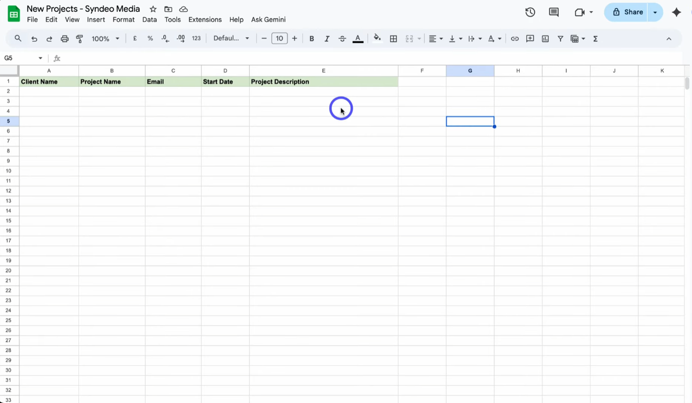
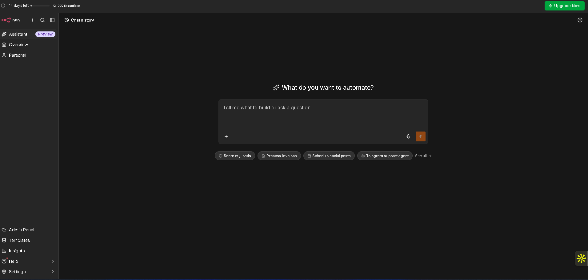
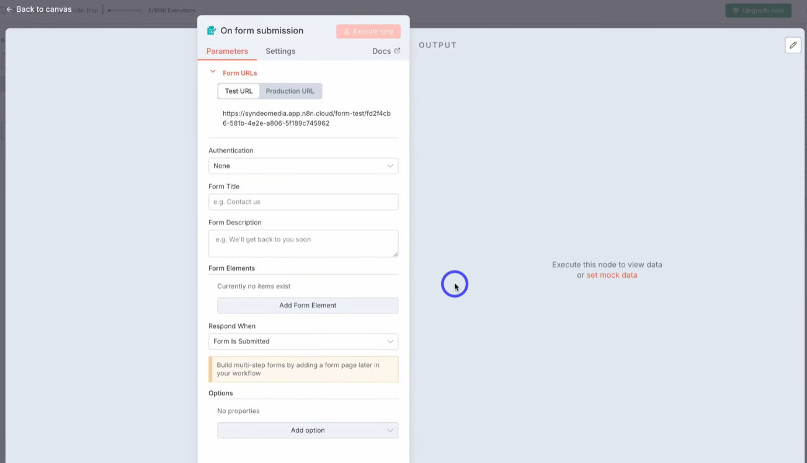
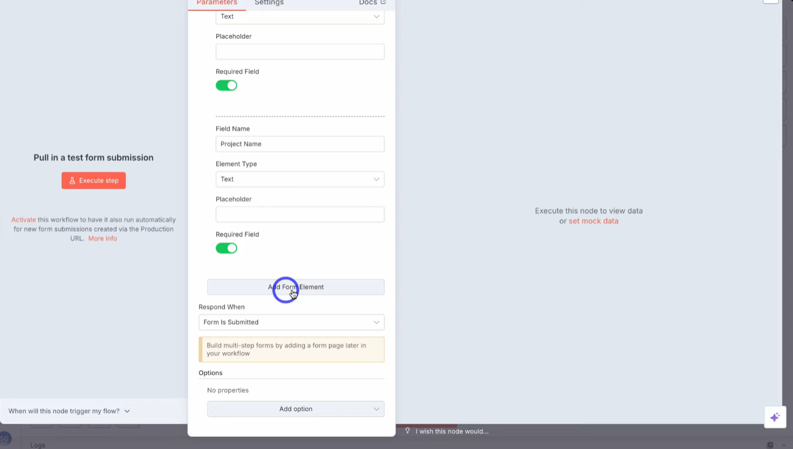
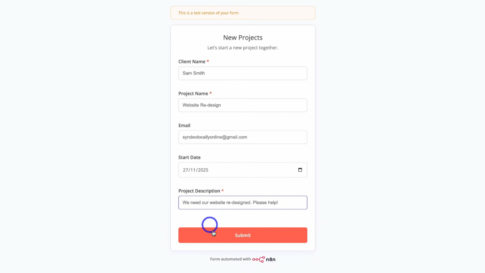
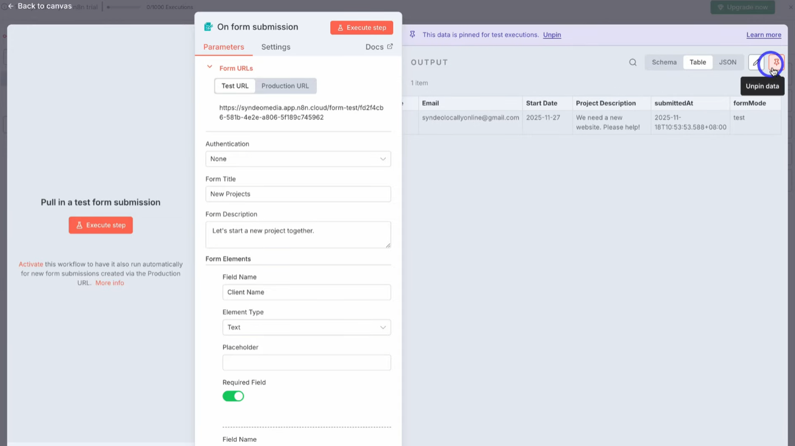
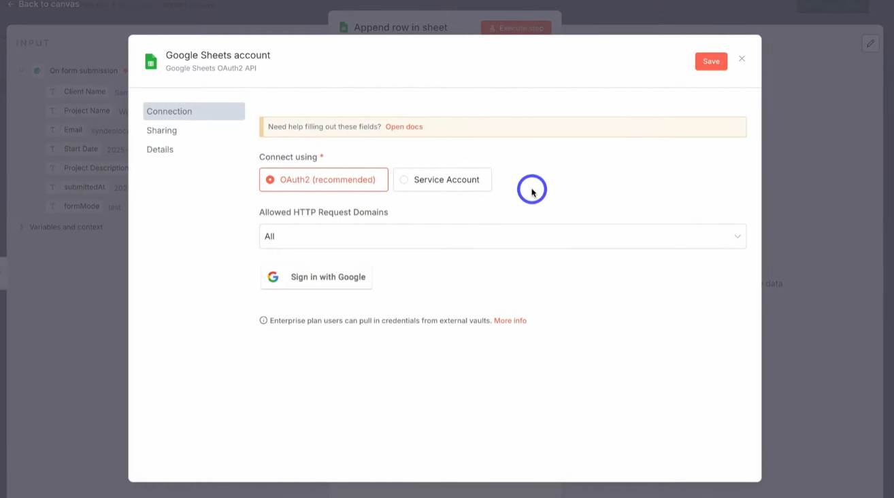
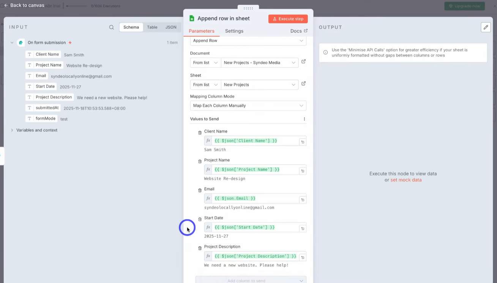
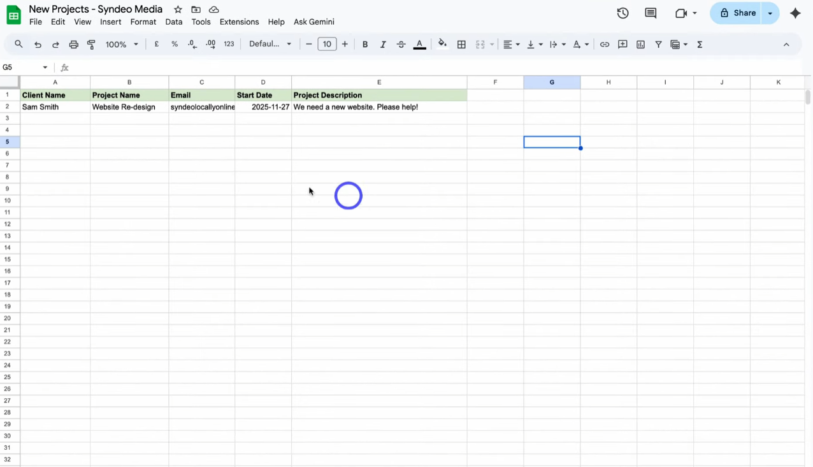
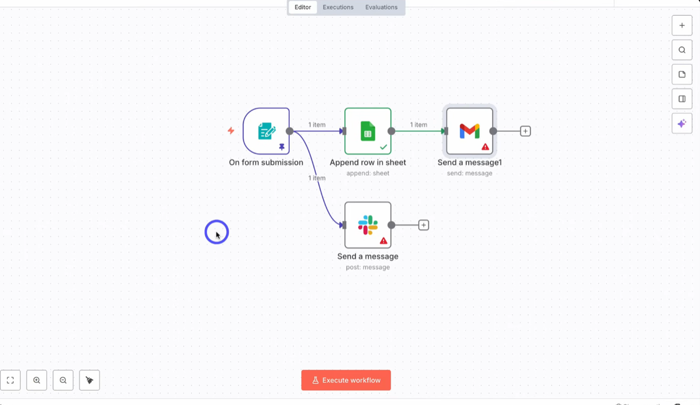

n8n and Google Sheets: Build a Form Automation Step by Step
If you want to automate small business tasks without paying for an expensive tool, n8n is worth a look. It is a workflow automation platform you can use as an alternative to Make or Zapier.
In this guide you will build a beginner workflow: a form that collects new project requests and saves every submission as a new row in Google Sheets. Once it works, you can add more apps on top.
What you will build
The workflow has just two nodes. A node is one step in an automation.
- Trigger: an n8n form that people fill out
- Action: a Google Sheets node that adds the submitted data as a new row
The form will collect five details for each new project: client name, project name, email, start date and project description.
Before you start
- An n8n account (there is a free trial, covered below)
- A Google account
- A Google Sheet with a header row. Name the sheet tab New Projects and add these five columns: Client Name, Project Name, Email, Start Date, Project Description

Step 1: Create your n8n account
- Open your browser and go to n8n.io.
- Click Get started for free.
- Answer a few questions to create your account. You will land in your n8n dashboard.
New accounts get a 14-day free trial, which is enough time to see whether n8n suits your business.

Step 2: Create a new workflow
Click the option to create a new workflow. You will see an empty canvas. This is where you add and connect your nodes.
Step 3: Add the form trigger
Click Add first step and choose On form submission. This node lets you build a form inside n8n and capture whatever people submit. It is the trigger that starts your workflow.
Set the form title and description
- Form title: New Projects
- Form description: Let's start a new project together

Add the form fields
In n8n, form fields are called elements. Scroll down and add them one at a time. Each element lets you pick an element type, such as text, email, date, dropdown or file.
- Client Name: text type, marked as required
- Project Name: text type, marked as required
- Email: email type
- Start Date: date picker type, not required
- Project Description: text type, placeholder "Please describe your project", marked as required
Placeholders are optional. Leave them empty where you do not need them.

Leave the Respond when form is submitted setting as it is.
Step 4: Test the form
- Click Execute step at the top of the node.
- A test form opens. Fill it in with sample data, including a test email and a start date from the date picker.
- Click Submit. You will see a message that your response has been recorded.
Back in n8n, the node shows a green tick and the submitted data appears in the output panel. You can view it as a table, a schema or JSON.

Click Pin on the output. Pinned data is reused in later test runs, so you do not have to fill in the form again every time.

Step 5: Send the form data to Google Sheets
Go back to the canvas and click the plus (+) icon next to your trigger. Search for Google Sheets and open the node. From the list of actions, choose Append row in sheet. This adds a new row to your sheet each time the form is submitted.
Connect your Google account
- Open the Credential to connect with dropdown and choose Create new credential.
- Click Sign in with Google and approve access.
- Close the credential window and select your Google Sheets account.

Choose the document and sheet
- Resource: Sheet Within Document
- Operation: Append Row
- Document: select your Google Sheets file
- Sheet: New Projects
Map the columns
You can map columns automatically or by hand. Mapping by hand makes sure every column gets the right data, so choose the manual option.
Your five columns show up in the node. Drag each field from the input panel on the left into the matching column:
- Client Name → Client Name
- Project Name → Project Name
- Email → Email
- Start Date → Start Date
- Project Description → Project Description

Step 6: Check that it works
Click Execute step. The node should finish with a green tick. Then open your Google Sheet. The test submission should now appear as a new row.

Go back to the canvas and you will see the full flow: the form trigger on the left, connected to the Google Sheets node. Each time someone submits the form, a new row is added.
Step 7: Add more steps (optional)
Click the plus icon on the last node to add more actions. You can also add a filter, a branch to split the flow, a merge or a loop.
- Slack: add the Slack node and choose Send a message to notify your team in a channel when a form comes in.
- Gmail: add the Gmail node and choose Send a message to email the person who filled in the form. Use the client email from the form as the recipient, then write the subject and the body of your confirmation or welcome email.
Each new app needs its own connection, just like you set up for Google Sheets.

On the canvas you can zoom in and out, or scroll with your mouse or touchpad.
Step 8: Save, enable and share your form
- Click Save to save the workflow.
- Switch the workflow on with the Enable (activate) option.
- Open the form trigger node and click Production URL.
- Copy the link.
That production URL is your live form. Put it on your website or share it anywhere you want to collect new project requests.
Quick summary
- Create an n8n account and start a new workflow.
- Add an On form submission trigger and build your form fields.
- Add a Google Sheets node with the Append row in sheet action.
- Map each form field to a column, test it, then save and enable the workflow.
- Share the Production URL to start collecting submissions.
Did something not work, or did you get stuck on a step such as the Google sign-in or column mapping? Send us a message on the contact page or leave a comment on the original video, and we will help you out.
Credit: This guide is based on the YouTube video by Sheetify CRM. Watch the original here: n8n and Google Sheets tutorial by Sheetify CRM. All product names belong to their respective owners, and features or menu names may have changed since the video was published.